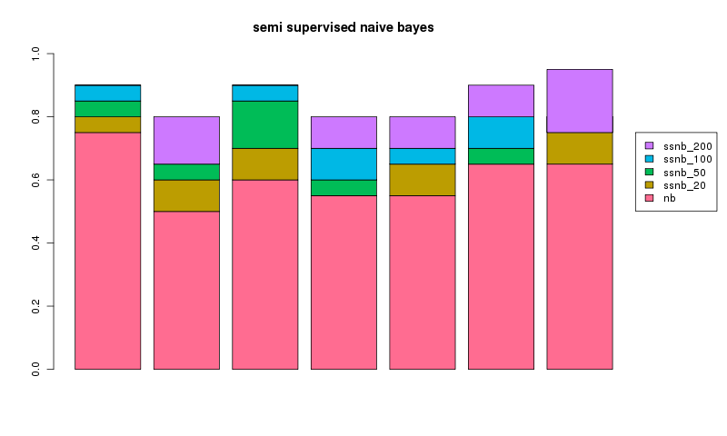

<< semi supervised naive bayes index v2: rewriting for scale >>
let's rerun the same tests, using the same method, we did before.
again as a test i took a random sample of 300 rss articles from a total of 8000.
30 articles were used for the training set, 30 for the test set with a varying number were used for the unlablled extras.
the experiment was repeated 7 times for a different random 300 articles with the results plotted below showing the addition gain over naive bayes (nb) using a semi supervised version (ssnb) with 20, 50, 100 or 200 unlabelled examples.

in every case we can see having the adding additional unlablled data makes an improvement. yay! it's interesting that, for run 1 and 3, 200 unlabelled examples did no better than 100 unlabelled examples. in general, seems semi supervised works pretty well!
trouble is my clumsy implementation doesn't scale so we need to change it
february two thousand and ten